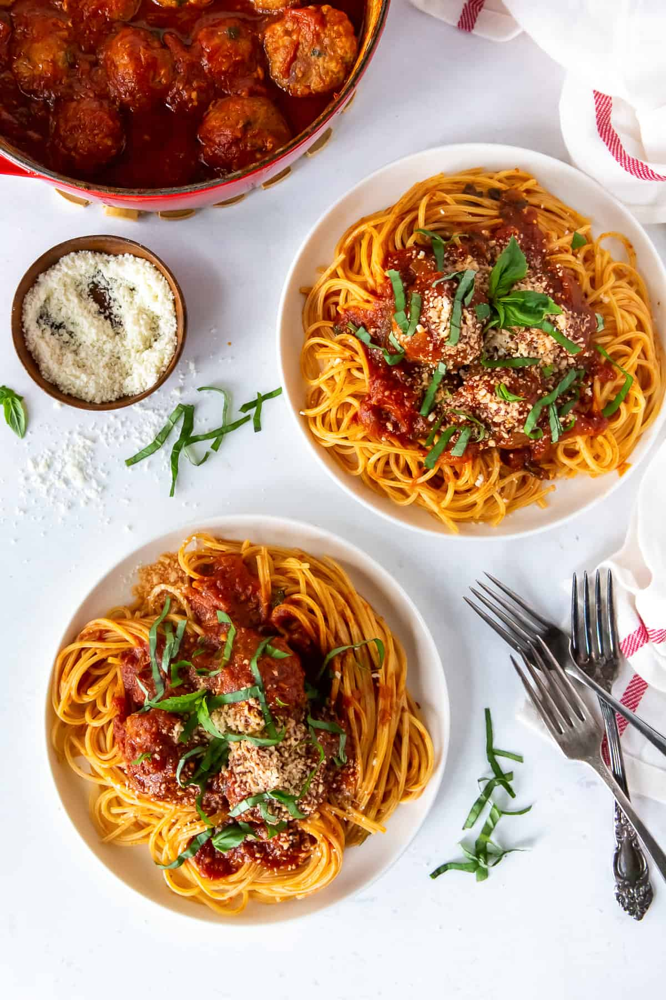

Spaghetti and Meatballs

Description
I’m all about quick and easy meals, but there are those times when it feels so good to spend some time in the kitchen on a truly made from scratch meal. There’s nothing more satisfying than a bowl of Homemade Spaghetti and Meatballs. It’s so worth the effort!I’m all about quick and easy meals, but there are those times when it feels so good to spend some time in the kitchen on a truly made from scratch meal. There’s nothing more satisfying than a bowl of Homemade Spaghetti and Meatballs. It’s so worth the effort!
Sauce Ingredients
- Olive Oil
- Onion and Garlic
- Tomatoes
- Tomato Paste
- Wine
- Water
- Fresh Herbs
- Salt and Pepper
- Sugar
- Bay Leaves
Meatball Ingredients
- Large eggs
- Meat
- Breadcrumbs
- Parsely
- Salt and Pepper
- Garlic
Homemade Spaghetti Sauce
- In a large Dutch oven, sauté the garlic and onion in olive oil until softened.
- Add the tomato paste. Fill the empty tomato paste can with wine and pour it into the pot.
- Add the tomatoes then fill the empty tomato can with water and add the water to the pot. Use a wooden spoon to press the whole tomatoes against the side of the pot to crush them.
- Next, add the parsley, basil, salt, pepper and bay leaves. Stir well and increase the heat as needed to bring the sauce to a boil. Lower the heat and simmer, uncovered, for 1 hour. Taste and add additional salt and pepper if needed. If the sauce seems too acidic, add the sugar.
Italian Meatballs
- Lightly whisk the eggs in a large mixing bowl.
- Add the remaining meatball ingredients.
- Use your hands to mix the meatball mixture until well combined.
- Line a baking sheet with foil and coat it with nonstick cooking spray. Use a cookie scoop to form the meat mixture into 1 ½-inch meatballs.
- Bake the meatballs for 15 to 20 minutes or until cooked through (the internal temperature should read 160 degrees F). Allow the meatballs to drain on a double layer of paper towels.
- After the sauce has simmered for about an hour, remove the bay leaves and add the meatballs to the pot. Simmer, uncovered, for an additional 30 minutes. During the final simmer, cook the spaghetti according to the package directions.